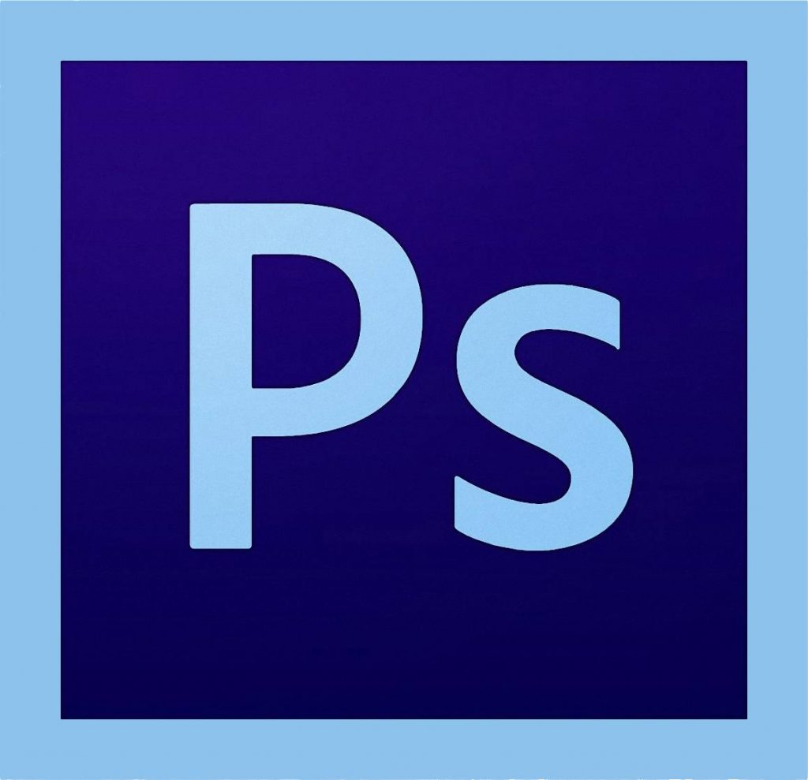

Из каких элементов состоит ГФС?
 Графический фирменный стиль это целая система визуально-коммуникационных средств. Она проектируется для создания уникального постоянного зрительного образа. Система имеет несколько основных компонентов:
Он также включает в себя всю рекламную продукцию, документы и упаковку. Все средства визуальной коммуникации в виде графики на фирменной одежде, изображения и надписи на машинах, на стенах, в помещениях тоже являются носителями графического фирменного стиля.
Маркетинговое исследование и формирование основной идеи
Работа над созданием образа, начинается с поиска основной идеи. Для этого команда проекта или дизайнер проводит свое маркетинговое исследование. Оно обязательно включает в себя изучение специфики работы предприятия, его культуры, истории и анализ рынка. Специалист маркетолог также изучает продукцию, целевую аудиторию и основных конкурентов. После этого формируется основные варианты идей создаваемого бренда. После доработки выбранная идея формализуется. Она является ключом для создания ассоциаций особого стиля и духа предприятия.
Создание графического фирменного стиля
Когда общая концепция разработана, можно приступить к дизайнерскому проектированию деталей. Создание различных компонентов оригинального бренда требует от специалиста системного и одновременно инновационного подхода. Образ компании должен быть композиционно завершённым. Эта задача сродни искусству. При этом должны быть выполнены определённые задачи, поставленные перед дизайнером.
Основные задачи дизайнера при создании фирменного стиля
Основная задача дизайнера при проектировании графического фирменного стиля – комплексный подход, гармоничные решения и яркое образное сочетание компонентов.